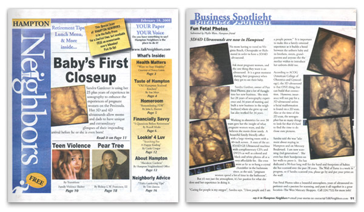

News
DailyPress.com
Former nurse runs ultrasound portrait studio
By LINDSAY POWELL | July 29, 2008
Sandra Gardner helps parents experience a magical moment — seeing their babies before they are born. And she captures it on film.
"Seeing the baby for the first time makes the family a closer part of the pregnancy," said Gardner, owner of Fun Fetal Photos, in Hampton. "It makes it real. It's a bonding experience."
Gardner, a nurse of 34 years and an obstetrical ultrasound technician for 29 years, started Fun Fetal Photos, an ultrasound portrait studio business, last year.
"Three-D and 4D ultrasound photographs and video are expensive," said Gardner. "Many families could not afford to buy them and insurance does not usually cover it. I wanted to offer services for a reasonable price."
Fun Fetal Photos uses imaging technology to provide gender determination, 2D, 3D photos and video in both black and white and color as a package, said Gardner. She charges $80 for a complete photo and video package, and $60 to returning customers, Gardner said.
"Ultrasounds at physicians' offices are for medical purposes, whereas mine are just for fun," Gardner said.
According to the American College of Obstetricians and Gynecologists (ACOG) Web site, many expectant parents are opting for ultrasound photos taken as keepsakes at ultrasound photography boutiques. While not much is known about the effects of repeated exposure to ultrasound, the practice seems to be safe, the site states.
To enhance an expectant family's experience while watching soon-to-be-born babies in the womb, Gardner placed a 40-inch screen in the viewing room, which has an unusual 25-person capacity.
"One expectant woman arrived with about 20 plus family members," Gardner said.
Gardner even went as far as to put a chandelier in the office's bathroom, because, she explained, "expectant mothers spend a lot of time in the bathroom."
She still keeps track of many of the babies that she has viewed by ultrasound over the years. In her office, she dedicated a 90-foot wall of footprints and handprints belonging to many of the babies that she scanned, some dating back to the seventies and representing two generations.
"One pair of prints belong to a woman who I scanned back in 1979," Gardner said. "Now she is pregnant and I scanned her baby just a couple of months ago."
Fun Fetal Photos lessons learned:
• Be realistic about your product
• Become familiar with what is on the market
• Talk to other business owners to get advice

Article from Neighbors Magazine, Febuary 18th, 2008.
View PDF
Story by Phyllis Watts
Video by Keesha